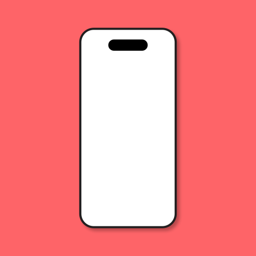
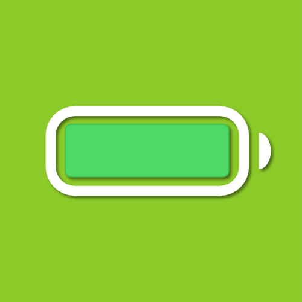

iPhone 12
Schéma des vis



Note : Les notes pré-écrites fournies constituent un support général et n'interdisent en aucun cas l'ajout ou l'utilisation de notes personnelles et spécifiques de votre part.